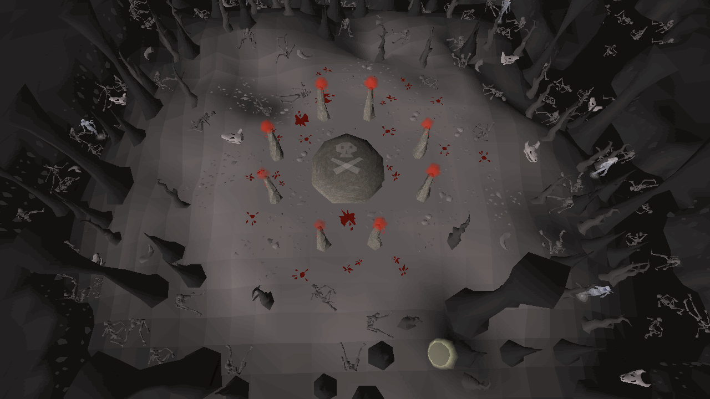

<section>
  <div class="grid text-media">
    <div class="left bg-green flex-column">
      <h2>Datasets</h2>

      <div class="fragment">
        <h3>OSbuddy</h3>
        <p>OSBuddy is a third-party RuneScape client which has a lot of added features compared to the official client. OSBuddy
          tracks the prices at which players sell items and has an API which has been used to gather the buying- and selling
          price together with the demand of supply of items.</p>
      </div>

      <div class="fragment">
        <h3>RuneScape</h3>
        <p>The RuneScape website is the single source of truth concerning (breaking) updates to the game. It also has a price-checker
          function which can ratify OSBuddy's price data.</p>
      </div>

      <div>
        <h2 class="fragment">Hypotheses</h2>
        <ul>
          <li class="fragment">
            <p>Every time an update has been released, the price of an item will rise or drop;</p>
          </li>
          <li class="fragment">
            <p>The price is directly correlated to the supply and demand of an item;</p>
          </li>
        </ul>

        <div class="fragment">
          <h3 class="context">Context</h3>
          <p>In the following visualizations, you will be shown the transactional data of an in-game item called a "Raw shark".
            Sharks are a very important food item in the game, since it gives you health after you have taken damage from
            monsters or other players. This item is very important to any players killing monsters, players killing other
            players and players doing risky mini-games where death is lurking in every corner.</p>
        </div>
      </div>
    </div>

    <div class="right">
      
    </div>
  </div>
</section>
